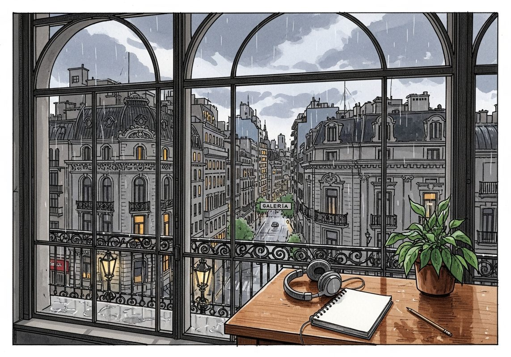

7/19

播客简报 2026-07-19
今日更新
#425 The Merchant Bankers
来源：Founders
原链接：
状态：已读完整音频 transcript
这期播客深入探讨了历史悠久的商业银行家群体，揭示了他们如何凭借信任、声誉、非传统思维和深厚的人际关系，在复杂多变的世界中建立并传承财富。它适合所有对商业本质、长期主义和人际网络价值感兴趣的创业者和商业人士。
- 商业银行家的起源与演变：从商人到信贷的掌控者：商业银行家王朝的开创者们，往往白手起家，从卑微的商品交易起步。例如，罗斯柴尔德家族最初是货币兑换商，贝林家族从事纺织，而播客中提到的韦斯伯格家族则从谷物贸易起家。他们发现，与其亲自交易实物商品，不如转而经营信贷更为有利可图且高效。正如那句精辟的总结：“出售一份签名比出售一捆丝绸更容易，也更赚钱。” 这种转变标志着他们从传统商人向金融家的迈进，通过为交易提供担保（如承兑汇票）赚取佣金，奠定了商业银行的最初形态。这要求他们具备非凡的胆识、直觉、判断力和专业知识。
- “魔法”的基石：信任、声誉与高度的保密性：商业银行家们将他们的运作称为“魔法”，并坚信“不应让阳光照进魔法”。他们的业务高度私密，不喜公开，甚至不留书面记录，因为他们认为“银行家是沉默寡言的人，只说出他们所想的10%”。这种运作模式的基石是绝对的信任和无可挑剔的声誉。他们宁愿承受短期损失，也要维护公司的良好声誉，因为他们深知，声誉是比财富更重要的资产，是维系长期合作关系的关键。这种对信任的极致追求，使得他们能够超越传统银行的繁文缛节，实现高效且灵活的交易，正如查理·芒格所言，信任是地球上最伟大的经济力量之一。
- 非正统的运作模式与快速决策的艺术：商业银行家们以其非正统的运作方式而闻名。播客中举例的挪威船主在周五下午急需20万英镑的案例，完美展现了他们的效率：银行家在几分钟内通过电话，无需任何书面文件，便安排了跨国支付。这种速度和灵活性是大型银行无法比拟的，因为后者受制于严格的官僚流程和委员会审批。商业银行家们认为，如果他们也像大银行那样行事，很快就会被淘汰。他们鼓励快速决策，即使偶尔犯错，也比因循守旧、错失良机要好。他们信奉“律师喜欢把事情复杂化，我们喜欢把事情简单化”的原则，这与沃伦·巴菲特和查理·芒格“不要让律师扼杀交易”的理念不谋而合。
- 人际关系网络与信息优势：无形资产的价值：商业银行家最宝贵的资产并非体现在资产负债表上，而是其内部专家的经验和外部广泛的人际关系网络。他们通过非正式的午餐会谈（讨论玫瑰、马匹、政治而非业务本身）来仔细评估客户的性格和可靠性。他们拥有从首相到地方警长的广泛人脉，总能在正确的时间、正确的地点找到正确的人。这种广泛的情报网络和对“内部消息”的获取能力，使得他们能够比竞争对手更早、更准确地洞察商机。他们深谙“关系决定一切”的道理，即使客户不符合常规要求，只要有深厚的关系，也能获得特殊待遇。这种对人际关系的重视和信息收集能力，是他们成功的关键。
- 创业者的“狠劲”与后代的“文明”：家族财富的传承：商业银行家家族的财富积累，往往始于一位“白手起家、富甲一方”的先驱。这些第一代创业者，在很多情况下都是“狠角色”（cutthroats），他们可能通过走私黄金、在战争期间非法转移物资等非常规手段积累原始资本。播客引用《权力的游戏》中布朗对詹姆·兰尼斯特的嘲讽，形象地说明了这一点：那些建立伟大财富的祖先，并非身着丝绸的贵公子，而是不择手段的“狠人”。然而，随着家族世代传承，后来的商业银行家们逐渐变得“文明”和“绅士”，他们怀念祖先的传奇故事，但其行事风格已大相径庭。这提醒我们，在光鲜的表象之下，往往隐藏着创业初期那份原始而强大的进取心。
146. 对Physical Intelligence柯丽一鸣4小时访谈：Pi的开源模型研究，机器人的江湖、族谱与主角
来源：张小珺Jùn｜商业访谈录
原链接：https://www.xiaoyuzhoufm.com/episode/6a57a05da4972c496dfc67f1?utm_source=rss
状态：未读全文：需要音频转写
材料不足：这期需要 transcript 或更完整正文后再做全篇摘要。
- 当前只有节目简介或网页正文；这是播客音频，必须获取 transcript 后才算读完整期。
历史精选
Super Pumped (with Brian Koppelman and Joseph Gordon-Levitt)
来源：Acquired
状态：已读音频详细听记
这期播客深入探讨了Uber从硅谷独角兽到文化现象的戏剧性历程，以及Showtime剧集《Super Pumped》如何以艺术手法解构其背后的权力、贪婪与颠覆的代价。它适合所有对科技创业、商业伦理、影视创作以及人性复杂性感兴趣的中文读者。
- 开场与《Super Pumped》的诞生：Acquired播客主持人Ben Gilbert和David Rosenthal回顾了Uber IPO（2019年5月）这一里程碑事件，并引出Showtime新剧集《Super Pumped》的诞生。这部剧集由知名制作人Brian Koppelman和David Levien（《亿万》主创）联合打造，并由Joseph Gordon-Levitt（乔·戈登-莱维特）饰演Uber前CEO Travis Kalanick（TK）。Koppelman透露，他与Levien写完剧本后，经纪人Warren Zavala立刻推荐了Joe，Joe在读完剧本后迅速敲定合作，整个选角过程异常顺利，主要演员几乎都是“第一选择”，这在行业内极为罕见。剧集将Uber的故事从商业新闻推向流行文化，引发了对科技公司影响力的深思。
- 角色塑造的挑战与Travis Kalanick的复杂性：制作团队在塑造Travis Kalanick这一角色时面临巨大挑战。他们需要一个演员，既能展现TK的非凡智慧、远见和凝聚力，让观众相信他能改变世界，同时又能毫不畏惧地呈现其“不体面”、“道德可疑”甚至“混蛋”的一面。Joe Gordon-Levitt被认为具备这种独特气质，能够投射出智慧并深入研究角色。剧集旨在展现一个完整的人性，而非简单地将TK描绘成媒体笔下的反派。Joe本人也幽默地表示，在片场需要不断向同事澄清“这不是我本人”，以避免观众将角色行为与演员混淆。
- Uber故事的深层意义与颠覆的代价：播客深入探讨了Uber故事背后更宏大的社会趋势：当“利润至上”和“股东价值高于一切”成为唯一驱动力时，会发生什么？这种“增长、增长、增长”的模式，尤其在硅谷被推向极致，甚至可能“将人权推下悬崖”。剧集通过Uber的故事，引发了对“颠覆的成本”的思考：新效用的便利性是否值得付出的代价？革命者在推翻旧秩序后，能否避免自己也变成“法西斯主义者”？剧中人物如Bill Gurley所面临的道德困境，使得这个故事充满了引人入胜的复杂性。
- 影视改编的创新与“虚构”的起源故事：《Super Pumped》的制作团队在影视改编上展现了大胆创新。他们利用“媒介即信息”的理念，颠覆了传统的叙事形式。例如，播客团队曾花费100小时研究Uber，发现其“埃菲尔铁塔上眺望”的创始故事是虚构的。剧集巧妙地呈现了这种“虚构”与“真实”的反转，先展示TK回忆中的浪漫版本，再揭示实际发生的情况，让观众在认知被玩弄后，对真相产生更深刻的理解。这种“玩弄形式”和“玩弄故事讲述惯例”的手法，正是利用了Uber故事本身就充满颠覆性的特质。
- 艺术与商业的张力：创作的责任与价值：播客讨论了《Super Pumped》这类作品可能带来的争议：它是否会像《华尔街之狼》一样，无意中“美化”不良行为，激励新一代创业者变得“混蛋”？制作团队强调，他们的意图是“毫不动摇地”揭示主角的缺点和黑暗面，将其作为“警示故事”，而非颂扬。艺术家的工作是提出问题，引发思考，注入个人观点，而非提供答案。艺术的价值在于其引发情感共鸣的能力，而商业则旨在提供解决方案、创造可量化的价值。两者在本质上存在张力，社会对“成功”的定义也值得反思。
RTW: Investing across Healthcare - [Business Breakdowns, EP.184]
来源：Business Breakdowns
原链接：https://joincolossus.com/episode/rtw-investing-across-healthcare/
状态：已读网页 transcript
本期播客深入探讨了RTW Investments在医疗健康领域，特别是生物科技投资的独特策略与哲学，揭示了该行业从早期研发到商业化、再到监管和市场动态的复杂全貌，非常适合对医疗健康投资、生物科技创新以及宏观政策影响感兴趣的专业人士和投资者。
- RTW的投资哲学与演进：深度融合公募与私募：RTW Investments的创始人兼首席投资官Rod Wong和首席商务官Stephanie Sirota分享了公司自2009年成立以来的发展历程。RTW专注于医疗健康领域，其投资策略的演变与生物科技行业的特性紧密相连。最初，RTW主要在公开市场进行投资，但随着对行业理解的加深，他们意识到早期创新和私人市场蕴藏着巨大潜力。因此，RTW逐步将业务拓展到私募股权和风险投资，通过孵化和支持初创公司，从更早的阶段参与创新。这种公募与私募的融合，使得RTW能够利用公开市场的流动性为私人投资提供支持，同时将私人市场的深度研究和早期洞察反哺到公开市场决策中，形成独特的竞争优势。他们强调，这种模式需要一支具备深厚科学背景和投资经验的多元化团队。
- 生物科技投资的生命周期与挑战：高风险高回报：医疗健康产品的生命周期漫长且充满不确定性，从药物发现、临床前研究、多阶段临床试验，到监管审批和最终商业化，每一步都耗时数年并需投入巨额资金。Rod Wong指出，生物科技投资的特点是高风险、高回报。大多数药物研发项目最终会失败，只有少数能成功上市。因此，投资者需要具备极强的耐心、专业的科学判断力以及承受风险的能力。RTW通过其独特的投资模型，试图在这一高风险环境中识别并支持那些具有真正创新潜力、能够解决未满足医疗需求的早期项目，并通过对整个生命周期的理解来优化投资组合，降低整体风险。
- 基因疗法：颠覆性创新与复杂性并存：播客以基因疗法为例，深入探讨了生物科技领域的颠覆性创新。基因疗法代表了医学的未来方向，它通过修改基因来治疗疾病，有望治愈过去无法治疗的遗传性疾病。然而，基因疗法的研发和商业化面临巨大挑战，包括技术复杂性、高昂的研发成本、严格的监管要求以及伦理考量。RTW认为，尽管存在这些挑战，但基因疗法等前沿技术代表了巨大的长期投资机会。成功的基因疗法公司需要顶尖的科学团队、强大的知识产权保护以及清晰的临床开发路径。投资者必须深入理解其科学原理和潜在市场，才能做出明智的决策。
- 监管政策对创新与投资的影响：以《通胀削减法案》为例：监管环境对医疗健康行业的创新和投资回报有着深远影响。播客重点讨论了美国《通胀削减法案》（IRA）对药物开发的影响。该法案旨在降低药品价格，但其条款，特别是关于药品定价谈判的规定，可能削弱制药公司研发新药的激励。Rod Wong和Stephanie Sirota认为，IRA可能会导致制药公司更倾向于投资那些研发周期短、回报快的项目，而对那些需要长期投入、风险更高的创新（如罕见病药物或复杂生物制剂）望而却步。这种政策变化可能在长期内抑制医疗创新，并改变投资者的风险偏好，对整个生物科技生态系统产生连锁反应。
- 生物科技并购（M&A）：行业成功的关键驱动力：并购是生物科技行业价值实现和创新的关键组成部分。对于小型生物科技公司而言，被大型制药公司收购通常是其研发成果变现和获得市场推广能力的重要途径。对于大型制药公司而言，并购是补充产品线、获取创新技术和维持增长的重要手段。播客指出，并购活动不仅是资本市场的运作，更是创新成果从实验室走向患者的关键桥梁。RTW在投资时会充分考虑潜在的并购退出路径，并评估目标公司在并购市场上的吸引力。M&A的活跃程度也反映了行业对创新的需求和资本市场的信心。